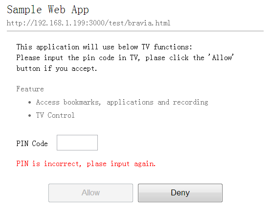

在上篇文章我们提到如何使用 WWW-Authenticate 实现登录和认证。这一次我们讲一下另一种实现方式。服务器端提供一个登录认证页面，浏览器端需要跳转到该页面，用户输入 PIN 码之后，发送请求，浏览器验证之后跳转当前页面来。以下是更详细的步骤。
- 浏览器端点击认证按钮，然后请求电视机（服务器端，下同）提供的一个认证页面。
1 | GET http://192.168.1.199:7999/webauth/auth_default?app_name=Sample%20Web%20App&app_url=http%3A%2F%2F192.168.1.199%3A3000%2Ftest%2Fbravia.html&return_url=http%3A%2F%2F192.168.1.199%3A3000%2Ftest%2Fbravia.html%3Fserver%3D192.168.1.199%26port%3D7999%26device_id%3D3%26x%3D1%26y%3D2%23zzz&auth_level=generic HTTP/1.1 |
该请求中包含一些重要的参数信息：
app_name 该应用的名称，显示给用户确认。
app_url 该应用的网址，显示给用户确认。
return_url 认证完成之后，通过该网址跳回本应用。
auth_level 认证等级，将会体现到该应用对电视机操控权限上。
- 电视机接收到认证页面请求，创建 PIN 码并显示在电视机上（如下图），返回该页面源码。

1 | HTTP/1.1 200 OK |
- 浏览器端显示该页面（如下图），用户输入 PIN 码并发送认证请求。

1 | POST http://192.168.1.199:7999/webauth/auth_default_submit HTTP/1.1 |
- 电视机收到认证请求，判断 PIN 码是否正确，如果不正确，则再次回到第二步中的认证页面，并提示错误，如下图。

如果正确，则跳转到 return_url 页面。
1 | HTTP/1.1 302 Found |